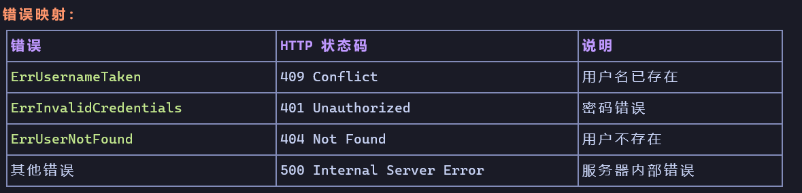

Go Web 项目：分层与鉴权
项目骨架
- cmd/server/: 入口文件，main.go启动服务
- configs/: 配置文件（如YAML、ENV）
- deployments/: 部署配置（Docker、K8s等）
- docs/: 项目文档
- internal/: 核心业务代码（不对外暴露）
- config/:Viper映射到config.local中的配置项;
- database:创建数据库驱动,实现连接
- dto: 面向前端提供可以请求的接口内容
- handler/: HTTP请求处理
- middleware/: 中间件（认证、日志等）
- model/: 数据模型
- repository/: 数据库操作
- router/: 路由定义
- service/: 业务逻辑
- token : fwt实现鉴定
- migrations/: 数据库迁移文件
- scripts/: 脚本工具
- go.mod: 依赖管理
10001：参数错误
20001：未登录或 Token 无效
30001：资源不存在
30002：资源冲突，例如用户名重复
50000：服务器内部错误
使用 git 提交每一步实现的项目内容;
V1 版本 :
- 配置git仓库 + git中的 .gitignore , 安装库 gin ,gorm , viper , 基础配置文件 ;
internal/config/config.go
- 使用 zap板子 初始化全局的zap日志
配置可以切换 zap : 开发和生产模式 , JSON 和 console 模式;
lumberjack 使用日志轮换器实现 writer 实现文件的写入
使用cleanup(): 把关闭函数全部打包返回,实现优雅关闭;
logger/logger.go --> config.go + config.local.yaml
internal/response/response.go: 配置返回内容的板子
internal/handler/health_handler.go: 检查接口状态
cmd/server/main.go --> 主函数入口 viper, logger 初始化
- 创建postgreSQL , 配置GROM, 连接池
docker 创建 postgreSQL 容器 ; ( 添加configs/config.local.yaml 文件中的内容 )
安装 GORM 库 , 创建 postgreSQL 驱动 ;
internal/database/postgres.go --> 创建驱动 , 设置日志等级
logger.Default.LogMode(logger.Warn) : 防止一次性输出大量的sql日志;
使用 db.DB() --> sqlDB 获取底层的SQL连接 , SQL连接池的相关配置
注意使用 db可以实现 一般的 SQL操作, 使用 db.DB()实现的是底层的SQL配置;
internal/handler/health_handler.g --> 检查Gin + postgreSQL连接
cmd/server/main.go--> 内部添加引入 gorm
配置 健康检查的测试 health_handler_test . go
- 手写SQL.Migrations , 创建 v1数据表
编号_操作名称.up.sql
创建 users , activities , registrations 三个表格;
- 创建 Model 和 dto
使 go代码认识 使用sql创建的表单 , 字段都要完全复制, 然后使用 首字母大写 ; `gorm`
dto : 前端接口允许请求的数据 , 后面会使用ShouldBindJSON转化为结构体; `binding`
- 创建 User Repository 不使用 Service 实现 GORM 编写
实现把 GO Model 转化为数据库操作 --> internal \ repository
internal/repository/user_repository.go --> 实现一个创建和使用ID查询的SQL方法
- 密码哈希 + JWT 和实现 Service认证
go get github.com/golang-jwt/jwt/v5 go get golang.org/x/crypto(密码哈希校验)
internal\token(只做JWT处理) internal\service(实现注册,登陆业务规则)
header + payload + JWT签名 --> 锁定接受header头中使用的算法实现加密;
注意处理ExpiresAt + IssueAt : token保存时间 + token签证创建时间;
创建JWT测试 ;
internal\service\errors.go 统一定义一下Service中的全部错误定义 ;
service/auth_service.go 用户实现注册登陆查询的主要核心逻辑 :
AuthService 对象 --> repository + token ; 封装后实现 注册 , 登陆, 查询 用户流程 ;
Register : 统一昵称为一个格式,Name查表是否存在, 对输入密码实现hash加密 , 创建新对象使用Creat();
Login : 统一格式,Name查表->(存在)验证哈希密码和明文密码,生成JWT签名返回Token
Me : 接受 userID -> ID查询用户 -> 返回用户response(没有 明文密码)
- 读取JWT配置 , 认证接口 , 鉴权中间件与路由
在 config 中使用Viper读取本地的 jwt 密钥 : 补充在 Validate 中的相关校验 (主要校验相关的参数为空)
扩展Response中的相关回复 : 未鉴权或失败(401) , 资源不存在 , 资源冲突 , 服务器内部错误 ;
internal/middleware/auth.go : 中间件结构 ,
使用 auth : 使用 getHeader("Authorization") ->获取到http中的请求头 ;
使用strings.Fields 实现拆分 : "Bearer"(持有人) + "JWTtoken"--> 拿拆分后的部分数目实现一次判断 ;
对 part[1] 实现解析 token ; 解析后使用 本地持有的密钥实现解析 匹配 ;
使用中间件存储 c.Set(""(寄托) , 实际内容 ) ; 实现一下token中断言实现返回 当前完整对象 ;
internal/handler/auth_handler.go : 创建 Handler (面向前端编程)
在 handler 层中实现传入参数 :
c.Param("json")--> 获取路径参数 ; Query("json")-->Query参数 ; token --> GetHeader("Authorization") -->获取请求头 ;
注入 AuthService(repository.UserRespository , token.JWTManager) ; (重复Register,Login,Me)
实现注册封装结构体 + service 实现处理业务 ; --> 封装好对象之后使用http实现返回前端对象 ;
最后封装一下 http 中常见的报错信息 :

internal/router/router.go:
使用 func New(封装三个handle前端请求)
使用 r.Use() 注册一下提前封装好的前端报错日志 ;
使用用户组实现区分是否需要实现中间件实现校验 ;
在 main 中 : 先读配置 -> 注册logger -> postgreSQL连接 -> JWT -> 创建Repository ->创建
Service -> 创建 Handler -> 创建 Router -> 使用配置文件 实现 Run() ;
internal/repository/activity_repository.go
使用 db 实现 创建, 查询 (分页) , 使用 for update 实现数据库中行加锁 ;
主要实现 创建 , 查询 , 活动登记的创建, 更新, 获取分页查询...函数 ;
- 使用创建好的数据库操作函数(内部实现的数据库连接 db) , service(内部传入的是数据库操作 repository)
service/errors.go : 添加使用 servic 可能的问题 --> 传入handler 层之后转化 为 http相关的响应 ;
internal/service/activity_service.go:
写当前的 handler 传入请求内容 后 : 校验业务规则, 实现组装Model ;
写好 model 内容后 , 直接使用 Repository 实现写数据库 ;
执行操作后, 返回handler 中封装好的 response 对象 .传入一个 data , 实现完整的 JSON 响应;
现在活动全流程 :
1.http 发送请求 -> main -> router -> 判断是否需要实现middleware层 --> 进入中间层,进入auth 逻辑 ,
2.校验传入的token --> 在上下文context 中实现保存 --> Gin 调用 Create方法(Handler层) -> 使用在dto
3.中实现的请求封装 JSON绑定之后 --> handler层直接发送上下文调用Service --> 校验一下相关字段 类似时间之类的,然后直接调用 repository中的数据库 Ctreat 方法 --> service层实现封装好了dto
4.返回对象封装好响应的DTO--> 发送给 Handler 层统一返回JSON (使用response.OK) -> 完成整套流程;
internal/handler/activity_handler.go:
创建 Creat 方法:middleware 获取当前用户,封装到req中,调用service实现创建 ;
String转化为无符号整型 : strconv.ParseUnit(c.Param("id") , 10 , 64) / 有符号 : strconv.Atoi(vaule) ;
扩展 auth_handler.go 替换handleServiceError函数 : 添加 Forbidden 函数 ;
添加权限分类 :
401 Unauthorized→ 未登录、Token 无效。
403 Forbidden→ 已登录，但不是活动创建者。
404 Not Found→ 活动不存在，或游客试图访问草稿活动。
409 Conflict→ 用户名重复、重复报名。
400 Bad Request→ 活动已满、未发布、报名关闭、参数非法。
internal/router/router.go 重写路由 添加 API ;
cmd/server/main.go: 初始化之后添加活动相关的 repository , service , handler
- 修改总体的角色认证逻辑 和 角色的权限框架
添加 User 对象中的字段 : Phone -> 区分 (ordinary_user ,verified_user )
修改 dto 中的返回体中的字段 : 添加手机号字段 和 手机号是否被校验的字段
service 中添加手机校验 , 调用数据库查手机号(err == nil), 更新手机号(err != nil ) [先校验才查]
对标假期作业 添加补充的功能接口:
1) 实现查看当前的认领任务
internal/dto/activity.go: 使用嵌套任务信息展示用户的认领记录 构建结构体 ;
internal/reoisitory/activity_repository.go: 使用(需要先定义)封装结构体实现数据库查询() ;
internal/service/activity_service.go: 调用repository 的相关函数逻辑; (列表是id->已报名)
补充 handler , router 即可 ;
2) 实现取消当前获取到的任务 (errors.go中添加任务不存在 "Canceled"错误)
internal/service/activity_service.go: 添加取消方法 (使用 ID 查库, 然后修改对应的任务状态)
调整了公开任务 查询字段 为 status = "published" 字段的任务;
internal/handler/activity_handler.go: 简单做一下鉴权之后调用 service中的方法实现;(查看列表是当前用户实现获取的活动的全部列表)
补充router , docs , Readme 等相关文档 开始对 V1单体架构开始接口测试 ;
为了更好的展示管理员服务 和 普通用户 之间的差别引入 Casbin 鉴权框架 : (防止主办方取消别人的活动)
使用RBAC框架, [casbin_model.conf]:定义一些基础配置(请求,角色,规则)
创建 postgresql 数据库表单 ,使用db创建adapterByDB 实现创建数据库连接 --> casbin.go(读写策略)
注册用户写库前先写角色表单; 创建中间件:先完成JWT验签之后, 然后使用角色判定策略 ; (发布401,403)
修改 auth_service方面中使用手机号实现注册登陆时候的写库操作 ;